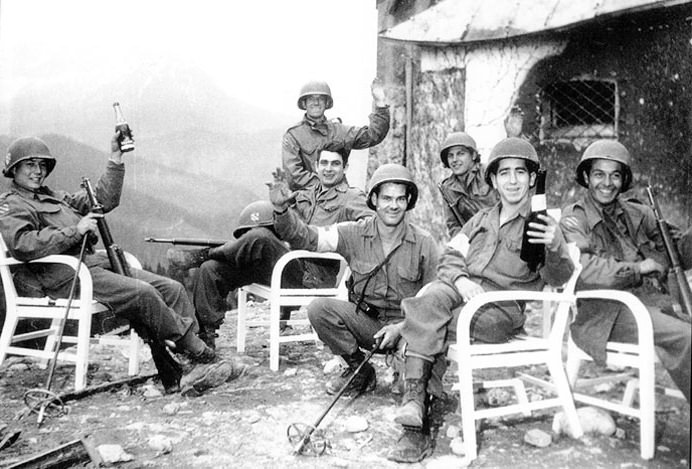
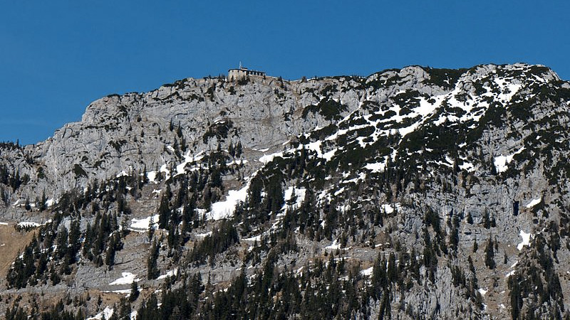

The 3rd Infantry Division drink Hitler’s wine on the patio of the Berghof, below the Eagle’s Nest (Source: Yank Magazine)
After the suicide of Adolf Hitler, the French and US forces raced to reach the Fuhrer’s compound in the Bavarian Alps. Reaching the famous Eagle's Nest was important because of the fine art, jewelry, gold, currency and wine, captured from all over Europe throughout the war.
Berchtesgaden held thousands of bottles of wine, including some of the best wine in the world at that time. Both armies attempted to outrun each other to the top. It is believed that the French reached the prize first, discovering more than half a million bottles of wine. They included vintage Bordeaux of Burgundy, rare bottles from all over France and tons of Champagne.

Kehlsteinhaus (The Eagle’s Nest) from below (By Sixlocal via Wikimedia Commons)
The soldiers used medical stretchers to transport the bottles of wine down the steep mountain.